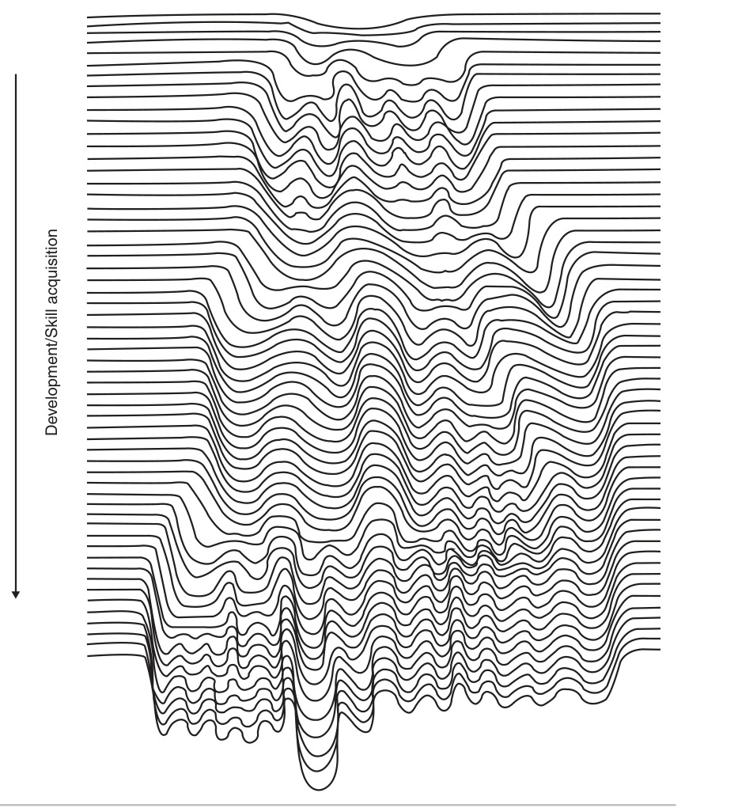
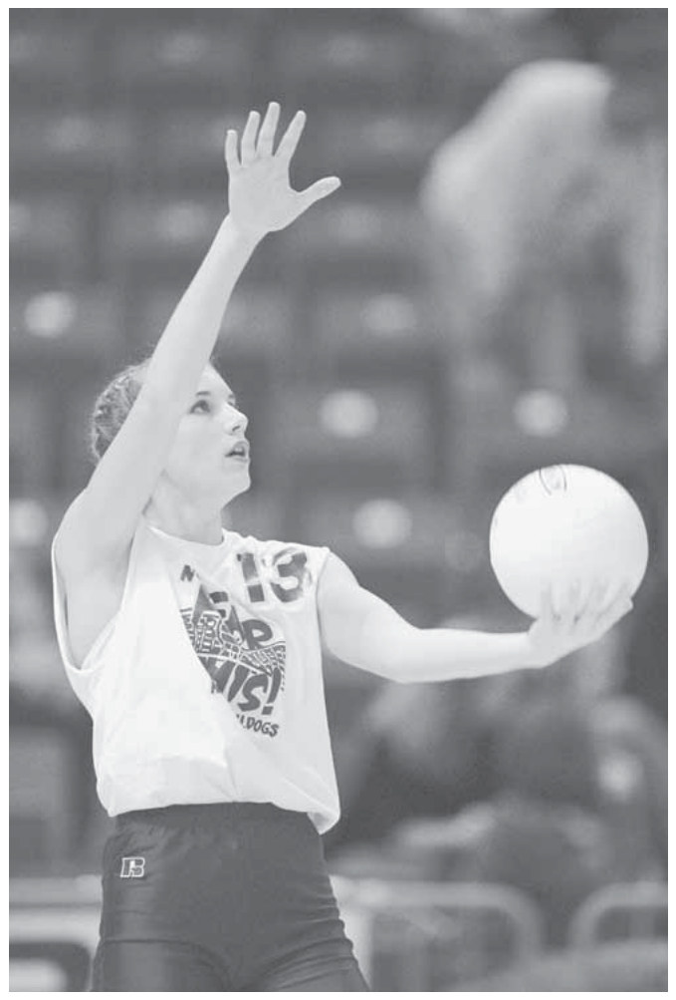
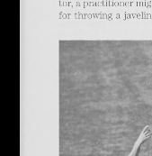

Chương 4 — Định nghĩa lại học tập: tiếp cận dựa trên rào cản/giới hạn
Tiếp cận dựa trên rào cản/giới hạn
DÀN Ý CHƯƠNG
Cảnh quan nhận thức–vận động
Mô hình học vận động của Newell
Lắp ráp một mẫu hình phối hợp: Giai đoạn 1 Đạt được sự kiểm soát một cấu trúc phối hợp:
Giai đoạn 2 Tối ưu hóa thành thạo sự kiểm soát: Giai đoạn 3
Các vấn đề thực tiễn của việc học
Duy trì Chuyển giao Thay đổi kỹ thuật
Vai trò của người thực hành vận động: Sư phạm phi tuyến
Những người thực hành không can thiệp
Tóm tắt
CHƯƠNG 4 CHƯƠNG 4
© Eyewire/Photodisc/Getty Images

Trong các chương 2 và 3, chúng ta đã thảo luận các nguyên lý then chốt của lý thuyết hệ thống động lực và tâm lý học sinh thái. Một quan điểm được chấp nhận rộng rãi trong giới nghiên cứu về tiếp thu kỹ năng là, so với sự phát triển của các mô hình lý thuyết và toán học về phối hợp vận động, những lý thuyết thay thế này vẫn chưa nhấn mạnh đủ việc hiểu các quá trình học. Ví dụ, Summers (1998) đề xuất rằng góc nhìn sinh thái "thiếu một lý thuyết toàn diện về học và phát triển" và cần có "một chương trình nghiên cứu nghiêm ngặt" (p. 12) về các quá trình này (xem thêm Walter, 1998). Dù vẫn cần thêm nghiên cứu về học và phát triển từ quan điểm dựa trên rào cản/giới hạn, một số công trình hữu ích về các quá trình này đang bắt đầu xuất hiện.
Trong chương này, chúng ta sẽ phân tích học vận động dưới ô dù của tiếp cận dựa trên rào cản/giới hạn và xem xét các hàm ý của khung lý thuyết này đối với vai trò của những người thực hành vận động. Cuộc thảo luận của chúng ta có thể hữu ích cho huấn luyện viên, chuyên viên giáo dục thể chất, giáo viên, nhà vật lý trị liệu, nhà động lực học cơ thể và các nhà khoa học thể thao. Những chuyên gia này có thể có mục tiêu riêng biệt, nhưng mỗi người đều chia sẻ mục tiêu chung là giúp người ta đạt được sự phối hợp và kiểm soát vận động. Từ góc độ của tâm lý học sinh thái và lý thuyết hệ thống động lực, chúng tôi dự định chỉ ra rằng kiến thức về các ràng buộc mà mỗi cá nhân cần đáp ứng có thể giúp xây dựng sự hiểu biết tốt hơn về các vấn đề thực tiễn then chốt như cấu trúc hóa một cách khách quan các môi trường học và phục hồi, bao gồm thiết kế các nhiệm vụ luyện tập và vai trò của các thiết bị hỗ trợ nhân tạo; bản chất và tần suất cung cấp thông tin bổ sung cho người học; điều chỉnh quy mô thiết bị luyện tập theo nhu cầu cá nhân; và xây dựng một mô hình có nguyên tắc về người học cùng với cơ sở lý luận cho vai trò của người thực hành.
Cảnh quan nhận thức–vận động
Làm thế nào những thay đổi dài hạn trong tổ chức của các hệ thống vận động xảy ra như kết quả của học và luyện tập? Từ góc nhìn dựa trên rào cản/giới hạn, chúng ta có thể mô tả tiếp thu kỹ năng là một người học (một hệ thống vận động động lực) đang tìm kiếm các trạng thái phối hợp ổn định và chức năng, hay các điểm hút, trong hoạt động hướng đến mục tiêu. Các giai đoạn học khác nhau là sự tạo ra những trạng thái phối hợp tạm thời chống lại các ràng buộc có tiềm năng làm xáo trộn tính ổn định của hệ thống. Trong nhiều môi trường thực hiện phức tạp như công việc và thể thao, người ta thường cần phát triển một vốn các điểm hút vận động (các trạng thái phối hợp ổn định) để đáp ứng các ràng buộc của những bối cảnh không đoán trước được. Chúng ta có thể xem vốn điểm hút này như một dạng cảnh quan nhận thức–vận động, trong đó người thực hiện cần phối hợp hành động của mình với môi trường để thực hiện kỹ năng hiệu quả. Ví dụ, cảnh quan nhận thức–vận động của một vận động viên thể dục dụng cụ có thể bao gồm các cú nhảy, cú xoay, cú tiếp đất và các động tác thăng bằng trong bài tập sàn. Đối với một đứa trẻ học đi xe đạp, cảnh quan này có thể gồm các điểm hút vận động cho việc điều khiển ghi đông, đạp bánh và kiểm soát lực phanh.
Cảnh quan các điểm hút là một ẩn dụ hữu ích để mô tả động lực học nội tại của một cá nhân. Bố cục của nó bị ràng buộc bởi di truyền, tình trạng phát triển, kinh nghiệm học trong quá khứ và các ảnh hưởng xã hội; nghĩa là, cảnh quan của mỗi người liên tục được định hình bởi sự tương tác của gen, nhận thức và ý định, cũng như các ràng buộc vật lý, thông tin bao quanh và động lực học của hệ thống (Muchisky, Gershkoff-Cole, Cole, & Thelen, 1996; Thelen & Smith, 1994). Bởi vì các ràng buộc thực hiện này không tĩnh, cảnh quan trở nên nhấp nhô và luôn thay đổi: một hệ thống thực sự động và mở. Khi các ràng buộc của người học thay đổi theo thời gian, cấu trúc liên hệ của cảnh quan cũng biến đổi để phản ánh hiệu ứng của sự phát triển và những trải nghiệm mới cũng như việc tiếp thu kỹ năng mới (xem hình 4.1).
Dùng tiếp cận dựa trên rào cản/giới hạn, chúng ta có thể nghĩ việc học là sự thích ứng với các ràng buộc thay đổi trên những thang thời gian khác nhau liên quan đến phát triển và kinh nghiệm sống (ví dụ, Newell, Liu, & Mayer-Kress, 2001). Hành vi nảy sinh dưới các ràng buộc trong tự tổ chức, và học vận động được xem như một nỗ lực cá nhân để thực hiện sự thay đổi. Mỗi người học phải tìm kiếm và lắp ráp một giải pháp vận động độc đáo giúp đáp ứng các ràng buộc nhiệm vụ cụ thể (Goldfield, 2000; Haywood, & Getchell, 2001; Rosengren, Savelsbergh, & van der Kamp, 2003). Quá trình này xảy ra khi người ta học cách phối hợp vận động của mình liên quan đến các vật thể, bề mặt và những người khác trong một loạt môi trường. Mục đích của luyện tập là tìm kiếm, khám phá, phát hiện, lắp ráp và ổn định các mẫu hình vận động chức năng và đáng tin cậy (McDonald, Oliver, & Newell, 1995; Newell, 1986; Williams, Davids, & Williams, 1999).
Một khi người học đã xác định một mục tiêu nhiệm vụ chức năng thông qua ý định, một quá trình khám phá liên tục cuối cùng dẫn đến sự nảy sinh của một giải pháp gần đúng cho nhiệm vụ. Sự xuất hiện của một giải pháp tinh chỉnh hơn cho mục tiêu nhiệm vụ củng cố các kết nối giữa các bộ phận cơ thể như một cấu trúc phối hợp cụ thể (Williams et al., 1999). Mẫu hình phối hợp thành công hay chức năng đạt được tính ổn định ngày càng cao khi luyện tập tiến triển, giúp cá nhân thích ứng với các ràng buộc thay đổi của nhiệm vụ và môi trường. Đồng thời, người học loại bỏ các mẫu hình kém thành công được kích thích trong quá trình tìm kiếm vì chúng ít chức năng hơn. Từ góc nhìn này, chúng ta có thể xem các quá trình luyện tập trong tiếp thu kỹ năng như sự lựa chọn các hành vi chức năng dưới ràng buộc (Thelen, 1995).
Khái niệm chính
Bằng tiếp cận dựa trên rào cản/giới hạn, chúng ta có thể định nghĩa lại học vận động như một quá trình năng động liên tục liên quan đến việc tìm kiếm và ổn định các mẫu hình vận động cụ thể, có chức năng trong toàn bộ cảnh quan nhận thức–vận động, khi mỗi cá nhân thích ứng với nhiều ràng buộc luôn thay đổi.
Hình 4.1: Khi các ràng buộc của người học thay đổi theo thời gian, cấu trúc tô pô của cảnh quan cũng thay đổi để phản ánh tác động của sự phát triển và những trải nghiệm mới, cũng như việc tiếp thu các kỹ năng mới.
In lại từ Advances in infancy research, C. Rovee-Collier và L.P. Lipsitt, tr. 130, Bản quyền 1996, với sự cho phép của Elsevier.
Phát triển/Tiếp thu kỹ năng

Mô hình Học vận động của Newell
Hãy xem xét ba giai đoạn mà người học trải qua để tìm ra những hành vi thích ứng. Làm thế nào để chúng ta đặc trưng hóa sự khác biệt giữa những người thực hiện ở các trình độ kỹ năng khác nhau? Newell (1985) đã xây dựng một mô hình dựa trên những hiểu biết của Bernstein (1967) về các bậc tự do cơ học của cơ thể. Mô hình này cung cấp một khung làm việc tốt để hiểu mối quan hệ giữa phối hợp và kiểm soát, đồng thời hữu ích cho việc hiểu cách các bậc tự do của hệ thống vận động có thể tổ chức lại theo thời gian khi con người thích ứng với những ràng buộc thay đổi. Trong phần này, chúng ta sẽ nghiên cứu động tác phát bóng chuyền trên vai như một phương tiện để hiểu mô hình của Newell.
Lắp ráp một mẫu hình phối hợp: Giai đoạn 1 sự can thiệp từ phía người thực hành, người học có thể khám phá nhiều khu vực khác nhau của cảnh quan khi họ tìm kiếm một mẫu hình vận động tương đối ổn định để đạt được mục tiêu của nhiệm vụ.
Giai đoạn đầu tiên trong mô hình của Newell (1985) liên quan đến việc lắp ráp một mẫu hình phối hợp phù hợp từ số lượng lớn các bậc tự do sẵn có của hệ thống vận động. Như đã lưu ý ở chương 2, để tạo ra một cấu trúc phối hợp, người học ban đầu cố gắng thiết lập các mối quan hệ cơ bản giữa các thành phần then chốt của hệ thống vận động động lực. Nói cách khác, người học lắp ráp các chuyển động tương đối phù hợp giữa các bộ phận cơ thể liên quan như chân, hông, thân và tay. Ví dụ, một người chơi bóng chuyền mới tập cần khám phá cảnh quan nhận thức–vận động được tạo ra từ sự tương tác với các vật thể quan trọng (quả bóng chuyền được giữ trong tay không phát bóng), các bề mặt (sân đấu), các chướng ngại vật (lưới), và các mục tiêu chiến lược (phát bóng qua lưới vào một khu vực cụ thể của sân đối phương). Trong trường hợp không có
Một người chơi bóng chuyền cố gắng phối hợp một hành động trong đó quả bóng được tung lên không trung và được đánh bằng tay. Thông qua luyện tập, một mẫu hình phối hợp cơ bản có thể xuất hiện từ các thành phần sẵn có của hệ thống vận động.

Một người chơi bóng chuyền cố gắng phối hợp một hành động trong đó quả bóng được tung lên không trung và được đánh bằng tay đánh. Thông qua luyện tập, một mẫu hình phối hợp cơ bản có thể xuất hiện từ các thành phần sẵn có của hệ thống vận động, đặc biệt là cánh tay tung bóng, cánh tay đánh bóng và đôi chân. Ở giai đoạn đầu của quá trình học, mẫu hình cơ bản này có thể xuất hiện rồi biến mất khá đột ngột khi người học cố gắng phối hợp các thành phần con của chuyển động gồm tung, đánh và bước chân thành một động tác phát bóng thành công. Dần dần, một mẫu hình phối hợp tương đối thành công bắt đầu xuất hiện thường xuyên trong luyện tập. Trong các ràng buộc nhiệm vụ cụ thể của động tác phát bóng chuyền, điểm hút (gồm các thành phần con tung, đánh và bước chân) trở nên ổn định hơn.
Khi người chơi bóng chuyền phát triển và tiếp thu các mẫu hình vận động khác trong luyện tập, một loạt điểm hút hay mẫu hình phối hợp có chức năng dần được hình thành thành một cảnh quan lớn hơn nhằm phục vụ việc thực hiện các kỹ năng liên quan như đập bóng, cứu bóng và phát bóng. Chúng ta có thể xem sự hình thành của cảnh quan này như một cuộc giằng co liên tục giữa động lực học nội tại hiện có của người thực hiện và các yêu cầu của nhiệm vụ (xem chương 2). Nếu động lực học nội tại và động lực học nhiệm vụ được yêu cầu bổ sung cho nhau, một điểm hút hiện có (mẫu hình phối hợp) có thể chỉ cần điều chỉnh lại các biến then chốt như lực, thời điểm và thời lượng chuyển động để hỗ trợ thực hiện một chuyển động mới, và cảnh quan điểm hút sẽ bị thay đổi ở mức độ tương đối nhỏ.
Chuyển giao tích cực xảy ra khi một mẫu hình phối hợp có chức năng (điểm hút) đã tồn tại trong cảnh quan được thích ứng có chức năng cho một nhiệm vụ khác, giống như một công cụ đa năng. Một ví dụ điển hình của quá trình này là khi mẫu hình vận động trên vai cơ bản của một người chơi quần vợt để phát bóng có thể được tinh chỉnh nhằm hỗ trợ động tác phát bóng trên vai trong bóng chuyền. Sự phù hợp chặt chẽ giữa động lực học nội tại của hệ thống vận động và động lực học của nhiệm vụ có thể tồn tại trong nhiều nghề nghiệp có yêu cầu nhiệm vụ tương tự, đòi hỏi những dụng cụ và thiết bị giống nhau. Ví dụ gồm thợ cơ khí và kỹ sư, hoặc thợ ghép gỗ và thợ mộc.
Thường thì một sự thích ứng liên tục hơn xảy ra khi một điểm hút hiện có bị mất ổn định trong cuộc giằng co với một điểm hút lân cận trong cảnh quan và bị hấp thụ vào tổ chức hệ thống mới, có chức năng hơn. Ở chiều ngược lại, ngay từ rất sớm trong quá trình học, hoặc khi những người lớn trưởng thành hơn thử bắt đầu các hoạt động mới, những trạng thái điểm hút hoàn toàn mới có thể hình thành, làm tăng số lượng trạng thái ổn định và gây ra những chuyển đổi đột ngột trong mẫu hình vận động (Zanone & Kelso, 1994). Vì vậy, nếu một người chơi bóng chuyền mới tập là một trẻ nhỏ chưa từng chơi quần vợt và rất ít khi tung bóng trên vai, đứa trẻ cần xây dựng một điểm hút mới trong cảnh quan nhận thức–vận động khá trống. Trong trường hợp thiếu kinh nghiệm và học hỏi, động lực học nội tại của một người có thể chịu ảnh hưởng của sự di truyền và các quá trình phát triển.
Tuy nhiên, sau một thời gian ngắn trải nghiệm cuộc sống, động lực học nội tại của người học thường chứa ít nhất dấu vết của một điểm hút phù hợp có thể được thích ứng. Điều này đặc biệt đúng với trẻ lớn và người trưởng thành trẻ tuổi. Sau cùng, hầu hết các chuỗi chuyển động phức tạp đều chứa một số yếu tố của các mẫu hình vận động cơ bản được khám phá từ sơ sinh, gồm nắm, cầm, đánh, chặn bắt, bước chân, kiểm soát tư thế, thăng bằng và di chuyển. Tất cả các mẫu hình vận động cơ bản này đều có thể được tinh chỉnh để tích hợp cụ thể vào những hành động phức tạp. Liu, Mayer-Kress, và Newell (2006) đã chỉ ra rằng ở giai đoạn học này, người thực hành có nhiều khả năng thấy những chuyển đổi đột ngột trong mẫu hình vận động như từ đi sang chạy, sang nhảy chân, hoặc những sự thoái lui trong thực hiện, khi họ khám phá cách tổ chức lại các bậc tự do của hệ thống vận động nhằm giải quyết vấn đề vận động.
Một khi một giải pháp tương đối thành công cho bài toán tìm kiếm đã được khám phá trong giai đoạn phối hợp, người học không hiếm khi thử ghép nhiều bậc tự do lại với nhau nhằm giảm bài toán kiểm soát xuống một số lượng nhỏ hơn gồm các cấu trúc phối hợp lớn hơn (hoặc các không gian con của tổng số bậc tự do). Người học, người rất cần một sự ổn định nhất định, có thể nắm lấy một mẫu hình vận động cơ bản nhưng cố định. Đây chính là điều Bernstein (1967) đã dự đoán sẽ xảy ra khi người thực hiện cố nén sự dư thừa các bậc tự do của hệ thống vận động thành những thành phần dễ quản lý hơn. Việc phát bóng chuyền có thể diễn ra thành công miễn là người học không bị yêu cầu di chuyển quá nhiều, chiến lược không đòi hỏi nhiều biến đổi, và bối cảnh thực hiện không thay đổi.
Giành quyền kiểm soát một cấu trúc phối hợp: Giai đoạn 2
Giai đoạn thứ hai trong mô hình của Newell (1985) là giai đoạn kiểm soát. Một khi các mối quan hệ giữa các bộ phận cơ thể và sự phối hợp cơ bản của động tác phát bóng đã được thiết lập, cá nhân đối mặt với thách thức là đạt được sự khớp chặt chẽ hơn giữa cấu trúc phối hợp đã lắp ráp và môi trường thực hiện. Ví dụ, người chơi bóng chuyền được yêu cầu thực hiện trên nhiều sân khác nhau về các kích thước then chốt như chiều cao trần, mặt sàn, độ gần tường và ánh sáng xung quanh. Ở giai đoạn cao hơn, người chơi cần khám phá cấu trúc phối hợp của động tác phát bóng để hoạt động thích ứng trong nhiều tình huống tương đối đặc thù. Trong quá trình khám phá này, người chơi thăm dò một mẫu hình vận động đã lắp ráp bằng cách thay đổi giá trị của các thông số quan trọng của cấu trúc phối hợp theo yêu cầu của môi trường. Ở chương 2, chúng ta đã lưu ý rằng tính biến thiên trong hệ thống vận động là không thể tránh khỏi và hiện diện ở mọi nơi, nghĩa là nhiệm vụ khám phá một cấu trúc phối hợp qua nhiều lần luyện tập lặp lại là tương đối dễ dàng. Vì lý do này, nhiều nhà lý thuyết ủng hộ quan điểm rằng tính biến thiên vận động có thể đóng một vai trò có chức năng trong việc giúp con người thích ứng với môi trường mới và học các kỹ năng mới (Davids, Bennett, & Newell, 2006). Theo Liu và các cộng sự (2006), giai đoạn học này thường được đặc trưng bởi những biến thiên tinh tế trong cách tạo mẫu hình vận động khi tính ổn định của điểm hút được thăm dò nhằm tăng cường khả năng thích ứng của nó trong những hoàn cảnh khác nhau.
Ngay cả ở giai đoạn học cao hơn, quá trình luyện tập là một nỗ lực nhằm cải thiện tính chức năng của hành vi bằng cách khám phá các mẫu hình vận động có chức năng trong những điều kiện khác nhau. Việc khám phá cảnh quan nhận thức–vận động dẫn đến việc tạo ra và tiếp thu phản hồi nhận thức, một quá trình trực tiếp tinh chỉnh cấu trúc phối hợp cho đến khi người học đạt được kết quả động học mong muốn và thỏa mãn tập hợp các ràng buộc nhiệm vụ (Fitch, Tuller, & Turvey, 1982). Trong động tác phát bóng chuyền, người chơi có thể dùng thông tin như khối lượng của bóng và vị trí của các cầu thủ đối phương để tinh chỉnh các mẫu hình phối hợp cơ bản của mình. Trong việc học đạp xe đạp, một đứa trẻ có thể thu nhận thông tin xúc giác từ độ cứng của ghi đông và tốc độ thay đổi hướng của bánh trước để tinh chỉnh cấu trúc phối hợp dùng để lái. Tìm kiếm nhận thức là cần thiết để tiếp thu những nguồn thông tin này, và như chúng ta đã giải thích ở chương 3, Gibson (1979) lập luận rằng hành vi khám phá trong luyện tập quan trọng cho việc bộc lộ các nguồn thông tin liên quan nhằm dẫn dắt hành động.
Trong giai đoạn kiểm soát, các quá trình khám phá và tìm kiếm được tạo điều kiện thuận lợi nếu các cấu trúc phối hợp đã lắp ráp trước đó đủ linh hoạt để được giải phóng dần và được phép tái hình thành thành những cấu hình hơi khác qua các lần luyện tập. Trong trường hợp của một người chơi bóng chuyền mới tập, cả hai cấu trúc phối hợp điều khiển chuyển động của tay và chân cuối cùng đều được tái cấu trúc thành một đơn vị lớn hơn. Giai đoạn kiểm soát được đặc trưng bởi việc tái cấu hình các bậc tự do của hệ thống vận động sao cho các cấu trúc phối hợp trở nên cởi mở hơn với việc bị ràng buộc lại bởi một nguồn thông tin môi trường hoặc bởi ý định của người thực hiện.
Yêu cầu về hành vi thích ứng trong nhiều ngữ cảnh vận động của con người được tăng cường nhờ tính siêu ổn định của hệ thống vận động (Kelso, 1981). Tính siêu ổn định đề cập đến một dạng ổn định năng động trong các hệ thống thần kinh sinh học, trong đó các bộ phận của hệ thống gắn kết với nhau cụ thể để đạt được các mục tiêu vận động có chức năng, đồng thời duy trì bản sắc riêng và tính linh hoạt trong vận hành của chúng (Kelso & Engström, 2006). Nói cách khác, các hệ thống vận động siêu ổn định không có những mẫu hình phối hợp cố định được lưu trữ bằng cách nào đó trong trí nhớ hay cấu trúc vật lý của chúng. Thay vào đó, chúng thể hiện xu hướng phối hợp khi các bộ phận tụ hợp lại đủ lâu để tạo thành một mẫu hình vận động có chức năng có thể đạt được mục tiêu thực hiện trong những hoàn cảnh môi trường cụ thể.
Bằng cách khai thác xu hướng siêu ổn định của hệ thống vận động, người học trình độ cao dần đối phó với những biến thiên tinh tế trong điều kiện thực hiện do những thay đổi không định trước, chẳng hạn như quỹ đạo của cú tung bóng, áp lực cạnh tranh và mệt mỏi. Tùy theo yêu cầu chiến thuật của một trận đấu, người học trình độ cao có thể cố ý thay đổi chuyển động. Ví dụ, một cú tung bóng ngắn có thể được kết hợp với một cú đánh mạnh, hoặc một cú tung bóng dài có thể đi kèm với tiếp xúc bóng–tay nhẹ lực hơn. Thông tin nhận thức do chuyển động của môi trường tạo ra trở nên then chốt khi người chơi cố gắng kiểm soát các bậc tự do vừa được giải phóng. Khi người học ngày càng tinh chỉnh hơn với những hệ quả nhận thức liên quan đến các vùng điểm hút ổn định, quyền kiểm soát lớn hơn đối với các bậc tự do tạm thời được nhường cho thông tin môi trường như các biến quang học hoặc âm thanh.
Quá trình này được minh họa bằng sự phối hợp cú tung bóng của những người chơi bóng chuyền thành thạo, có hoặc không có động tác đánh bóng. Hình 4.2 cho thấy cú tung bóng được thích ứng cho việc đánh bóng như thế nào. Khi không yêu cầu đánh bóng, cú tung được cấu hình theo một cách khác. Như đã mô tả ở chương 3, nhiều nguồn thông tin đóng vai trò là ràng buộc tạo thuận lợi cho sự tự tổ chức của các cấu trúc phối hợp đặc thù cho nhiệm vụ. Đó chính là ý nghĩa của việc hình thành một sự ghép nối chặt chẽ giữa thông tin và chuyển động, có thể được tinh chỉnh để vận hành trong nhiều ngữ cảnh khác nhau.
Hình 4.2: Các đường biểu diễn thời gian–độ dịch chuyển cho việc định vị quả bóng trong (a) điều kiện phát bóng (định vị và đánh bóng) và (b) điều kiện chỉ định vị bóng, ở một đối tượng đại diện. Dữ liệu độ dịch chuyển trên trục y được hiệu chỉnh theo mét.
Thời gian (s)
1.4
1.2
1.8
1.6
0.8
0.6
0.4
0.2
00 3.0 2.0 1.0 4.0 5.0 6.0 7.0 8.0 9.0
Độ dịch chuyển (m)
Thời gian (s)
1.4
1.2
1.8
1.6
0.8
0.6
0.4
0.2
00 3.0 2.0 1.0 4.0 5.0 6.0 7.0 8.0 9.0
Độ dịch chuyển (m)

Tiêu điểm Nghiên cứu
Free(z)ing các cấu trúc phối hợp
Công trình của Vereijken, van Emmerik, Whiting, và Newell (1992) đã tạo ra động lực ban đầu cho việc nghiên cứu sự tổ chức lại hệ thống vận động cùng với học. Bằng chứng về cách người học đối phó với các bậc tự do của hệ thống vận động trong tiếp thu kỹ năng đến từ nghiên cứu của họ về học thực hiện các chuyển động toàn thân trên một máy mô phỏng trượt tuyết (xem hình 4.3).
Hình 4.3: Bằng chứng về cách người học đối phó với các bậc tự do của hệ thống vận động trong tiếp thu kỹ năng đến từ các nghiên cứu được tiến hành trên một máy mô phỏng trượt tuyết.
Bằng cách thực hiện các chuyển động toàn thân ép năng lượng vào hệ thống được tạo thành từ bàn đạp, lò xo và ray của máy mô phỏng, người trượt tuyết nhằm tạo ra các chuyển động giống như slalom của bàn đạp trên các ray. Những chuyển động thành công trên máy mô phỏng trượt tuyết được đặc trưng bởi các chuyển động có biên độ lớn, trong đó bàn đạp di chuyển đến các mép ngoài của ray; tần suất ngày càng tăng của các chuyển động giống slalom; và sự mượt mà, trong đó độ giật cục ban đầu được giảm bớt.
Bài viết
Nhóm nghiên cứu yêu cầu năm người trượt tuyết mới tập học tạo ra các chuyển động giống slalom trong 7 ngày. Trong thời gian này, 140 lần thử nghiệm, mỗi lần kéo dài 60 giây, đã được thực hiện. Các nhà nghiên cứu không đưa ra hướng dẫn nhiệm vụ cụ thể nào và ghi lại biên độ cùng tần suất của các chuyển động bằng cách dùng các điểm đánh dấu khớp trên bàn đạp trượt tuyết và trên các khớp của thân trên và thân dưới.

Các tác giả cho rằng nếu các khớp không tham gia tích cực vào thực hiện nhiệm vụ, tính biến thiên quanh giá trị trung bình của các góc khớp được ghi lại (tính theo độ) sẽ thấp, cũng như phạm vi chuyển động góc của các khớp. Hơn nữa, các mối quan hệ giữa các khớp sẽ cao khi người học xây dựng các sự ghép nối chặt chẽ giữa các khớp then chốt. Dữ liệu cho thấy, ngay từ đầu quá trình học, tính biến thiên quanh giá trị trung bình của các góc khớp trong suốt thời gian chuyển động (được ước tính bằng độ lệch chuẩn quanh giá trị trung bình) là thấp. Phạm vi chuyển động góc của các khớp cũng thấp và các giá trị tương quan chéo giữa các khớp cao. Đây chính là loại kết quả mà người ta mong đợi nếu người học đang đông lạnh các bậc tự do để kiểm soát một hành động nhiều bậc tự do. Tuy nhiên, có bằng chứng cho thấy người học đang cố giải phóng các sự ghép nối chặt chẽ này để cho phép các khớp tham gia tích cực hơn vào chuyển động.
Cùng với luyện tập, độ lớn của các góc ở hông, đầu gối và cổ chân tăng lên, và tương quan chéo giữa hông và đầu gối, cũng như giữa hông và cổ chân, giảm đi. Tốc độ của các hiệu ứng học đối với phối hợp được nhấn mạnh bởi thực tế là sự thay đổi lớn nhất về độ lệch chuẩn của các góc khớp trung bình xảy ra giữa lần thử nghiệm 1 và 8 trong tổng số lần thử nghiệm (n = 140) (xem hình 4.4). Độ lệch chuẩn của khớp gối cho thấy mức tăng lớn nhất qua các lần thử, gợi ý rằng khớp gối có ảnh hưởng lớn nhất đến việc người học giành được quyền kiểm soát chuyển động slalom trong luyện tập.
Hình 4.4: Sự thay đổi lớn nhất về độ lệch chuẩn của các góc khớp trung bình xảy ra giữa lần thử nghiệm 1 và 8 trong tổng số lần thử nghiệm (n = 140).
Journal of Motor Behavior, vol. 24, issue 1, pp. 135-137, 1992. In lại với sự cho phép của Helen Dwight Reid Educational Foundation. Published by Heldref Publications, 1319 Eighteenth St., NW, Washington, DC 20036-1802. http://www.heldref.org. Copyright © 1992.
Lần thử nghiệm
0 10 20 30 40
Độ lệch chuẩn cổ chân đầu gối hông
X X X X X X X
ỨNG DỤNG
Hãy nghĩ đến những tình huống mà người thực hiện giải phóng hoặc buông các bậc tự do để đáp ứng các ràng buộc nhiệm vụ tạm thời. Ví dụ, bạn mong đợi mẫu hình phối hợp nào từ một người mới bắt đầu trượt tuyết phải vượt qua một đường trượt đen dốc? Những người trượt tuyết trình độ cao đối phó thế nào với các ràng buộc của một đoạn gồ ghề toàn mấp mô hay tuyết bột dày?

Những hiểu biết của Bernstein (1967) về học vận động đã giúp ích cực kỳ trong việc hiểu cách người học đối phó với cơ bắp, khớp và các đoạn của cơ thể trong khi luyện tập một hành động nhiều khớp. Tuy nhiên, khi sự hiểu biết về các khái niệm từ lý thuyết hệ thống động lực và tâm lý học sinh thái dần hình thành qua các năm, đã trở nên rõ ràng rằng Bernstein chỉ nắm bắt được một phần của quá trình tiếp thu kỹ năng.
Một số nhà nghiên cứu đã xem xét lại những hiểu biết ban đầu của Bernstein (1967) về sự thay đổi các bậc tự do của hệ thống vận động như một kết quả của học. Theo Newell và các cộng sự (2001), sự chuyển tiếp từ giai đoạn phối hợp sang giai đoạn kiểm soát không phải là một quá trình tuyến tính và vĩnh viễn, như một số bản dịch các bài viết gốc của Bernstein ngụ ý. Gần đây, đã rõ rằng các bậc tự do của hệ thống vận động được tổ chức lại tùy theo một loạt ràng buộc tác động lên hệ thống tại bất kỳ thời điểm nào, khi người học khai thác xu hướng siêu ổn định trong hệ thống vận động (xem Chow et al., 2006; Liu et al., 2006; Newell, Liu, & Mayer-Kress, 2005). Ngay cả những người thực hiện có trình độ rất cao cũng có thể quay lại giai đoạn phối hợp và thể hiện các chuyển động cứng nhắc (thường là đặc điểm của người mới tập) nếu điều đó được xem là một mẫu hình có chức năng để thỏa mãn các ràng buộc nhiệm vụ trong những hoàn cảnh thực hiện cụ thể (xem dữ liệu về động tác phát bóng chuyền của Temprado, 2002).
Newell và Vaillancourt (2001) lập luận rằng cách Bernstein ban đầu quan niệm về quá trình thay đổi trong các hệ thống vận động có lẽ quá hẹp, vì nó không nhận ra rằng sự tổ chức lại hệ thống vận động có thể dẫn đến số lượng bậc tự do cơ học tăng hoặc giảm do bản chất thay đổi của các ràng buộc cần được thỏa mãn. Đôi khi, việc giảm số bậc tự do của hệ thống vận động được dùng trong các mẫu hình phối hợp lại có chức năng đối với các vận động viên chuyên nghiệp thực hiện trong những ràng buộc nhiệm vụ đặc thù. Có những tình huống mà các vấn đề vận động trở nên thử thách hơn do nhấn mạnh quá mức vào độ chính xác hoặc do thông tin môi trường không đáng tin, chẳng hạn như ánh sáng kém trong trận cricket hay quần vợt, mặt đường đi bộ hoặc lái xe trơn trượt, hoặc thực hiện trước một khán giả khắt khe.
Trong những bối cảnh luyện tập căng thẳng như vậy và trong thi đấu, các dao động về trạng thái cảm xúc như lo âu và hưng phấn có thể làm giảm độ chính xác của việc phát hiện thông tin (Bootsma, Bakker, van Snippenberg, & Tdlohreg, 1992). Ví dụ, Weinberg và Hunt (1976) ghi nhận sự giảm hoạt động cơ bắp tuần tự, thay vào đó là sự co co cùng lúc tiêu tốn nhiều năng lượng giữa cơ chủ vận và cơ đối kháng ở những người ném bóng có mức lo âu cao. Chúng ta có thể giải thích sự gia tăng được quan sát thấy về độ căng cơ như những nỗ lực đông lạnh lại các bậc tự do và tổ chức lại các cấu trúc phối hợp nhằm cố giành lại quyền kiểm soát. Hơn nữa, do các quá trình tự nhiên như lão hóa, ốm đau hoặc bệnh tật, sự thay đổi trong tổ chức các bậc tự do của hệ thống vận động có thể dẫn đến tăng hoặc giảm số lượng được dùng trong một giải pháp phối hợp cụ thể.
Nghiên cứu về cú đá bóng trong bóng đá đã minh họa rất rõ cách người học có thể áp dụng những cách tiếp cận khác nhau trong việc dùng các bậc tự do của hệ thống vận động để thỏa mãn các mục tiêu nhiệm vụ là đá bóng qua một rào cản về chiều cao, trong khi thay đổi kiểm soát lực ở các khoảng cách khác nhau. Chow và các cộng sự (2007) thấy rằng một số người học đã tăng và giảm mức độ tham gia của các bậc tự do hệ thống vận động trong luyện tập theo cách không tuần tự khi họ tìm kiếm một động tác nâng bóng (chipping) có chức năng trong bóng đá.
Berthouze và Lungarella (2004) thậm chí còn đi xa đến mức gợi ý rằng một chiến lược luân phiên đông lạnh và giải phóng các bậc tự do của hệ thống vận động có thể là cách thành công nhất để tiếp thu sự phối hợp vận động. Ý tưởng này cần được đánh giá trong các nghiên cứu tiếp theo, nhưng dù sao bằng chứng cho thấy việc tăng hay giảm mức độ tham gia của các bậc tự do hệ thống vận động phụ thuộc vào các ràng buộc của nhiệm vụ và trạng thái tự nhiên của cá nhân tại bất kỳ thời điểm nào (Newell, Broderick, Deutsch, & Slifkin, 2003).
Tối ưu hóa thành thạo quyền kiểm soát: Giai đoạn 3
Giai đoạn cuối cùng trong mô hình của Newell (1985) đề cập đến sự tối ưu hóa thành thạo một cấu trúc phối hợp mà người thực hiện dần làm cho linh hoạt và cởi mở hơn trong việc khai thác các nguồn thông tin môi trường, từ đó nâng cao hiệu quả và quyền kiểm soát. Ở trình độ thực hiện này, người chơi trở nên thành thạo trong việc khai thác các lực từ chuyển động để bảo đảm những hành động linh hoạt và hiệu quả. Ví dụ, thử nghiệm với việc kiểm soát động tác phát bóng chuyền có thể giúp tối ưu hóa thực hiện. Khi người chơi tìm kiếm một giải pháp tối ưu cho thách thức phát bóng trong các ràng buộc nhiệm vụ khác nhau, họ có thể thay đổi lực, thời lượng và biên độ của mẫu hình vận động.
Việc Newell dùng thuật ngữ tối ưu gợi ý rằng hiệu quả năng lượng là một yếu tố quan trọng chi phối sự xuất hiện của một mẫu hình vận động trong lúc thực hiện. Theo Newell (1985), hiệu quả năng lượng là "một nguyên lý tổ chức tiên nghiệm của phối hợp và kiểm soát" (tr. 304). Kỹ năng, hay tổ chức tối ưu, xuất hiện khi các thành phần của một cấu trúc phối hợp được điều chỉnh về mặt định lượng sao cho người thực hiện có thể dùng các lực phản ứng của chi trong lúc vận động. Các thuộc tính thụ động, quán tính và cơ học của chuyển động chi được khai thác trọn vẹn trong một chuyển động thành thạo, vốn được đặc trưng bởi sự mượt mà và trôi chảy. Ở giai đoạn này, các cấu trúc phối hợp trở nên ổn định khi các bậc tự do bổ sung được giải phóng. Sự ổn định này làm tăng số thông số có thể kiểm soát và chịu ràng buộc bởi thông tin môi trường, dẫn đến chuyển động linh hoạt hơn (Bernstein, 1967).
Ví dụ, trong động tác phát bóng chuyền của người chơi chuyên nghiệp, sự trôi chảy gia tăng này có thể cho phép người thực hiện tận dụng năng lượng đàn hồi được giải phóng từ các gân trong chu kỳ kéo dài–rút ngắn cơ mà trước đây chưa được kích thích. Vì vậy, nhờ sự tham gia của phản xạ, pha gia tốc của tay và cánh tay đánh bóng có thể được tăng lên và có thể kết hợp với sự xoay thân để tạo ra sức mạnh trong động tác phát bóng. Với sự tối ưu, chuyển động phát bóng giờ đây trở nên rất tiết kiệm năng lượng. Đó là lý do người quan sát thường mô tả việc thực hiện các động tác của vận động viên ưu tú là dường như không tốn sức. Những đặc điểm bổ sung của trình độ thực hiện thành thạo tối ưu gồm sự thích ứng tức thì trước những thay đổi nhỏ và đột ngột của môi trường (Newell, 1996).
Ngay cả ở giai đoạn thực hiện kỹ năng tối ưu, học khám phá vẫn đóng vai trò quan trọng khi con người tìm kiếm những giải pháp nhiệm vụ sáng tạo hoặc những mẫu hình còn tiết kiệm năng lượng hơn. Ở mọi giai đoạn học, người thực hiện đang tìm kiếm những giải pháp có chức năng nhất để thỏa mãn các ràng buộc đặt lên họ. Những đặc điểm này của hành vi vận động thành thạo được thảo luận thêm trong phần Tiêu điểm Nghiên cứu và chương 5.
Những vấn đề thực tiễn cho việc học
Có ích khi xem xét lại một số cân nhắc thực tiễn quan trọng phát sinh từ thảo luận trước đó về tiếp cận dựa trên rào cản/giới hạn đối với học vận động. Trong phần này, chúng ta sẽ xem xét những hàm ý của các ý tưởng lý thuyết này đối với các vấn đề thực tiễn mà hầu hết người thực hành trong tiếp thu kỹ năng đối mặt: duy trì, chuyển giao, và thay đổi kỹ thuật.
Duy trì
Duy trì đề cập đến thực tế là, với những điều kiện luyện tập phù hợp, con người thường có thể giữ lại một phần thiết yếu của mẫu hình vận động bất kể loại nhiệm vụ họ thực hiện (Newell, 1996). Điều này là vì có thể còn dấu vết của một giếng điểm hút đã từng hình thành trước đó trong động lực học nội tại của người học, và nó có thể cung cấp một mức độ ổn định nhất định cho hành động (xem chương 2). Hãy nhớ rằng giếng điểm hút là một vùng ổn định của hệ thống động lực có khả năng chống lại các nhiễu loạn bên ngoài. Ví dụ, trong các hệ thống vận động của con người, giếng điểm hút có thể là sự tạo mẫu ổn định giữa các chi đặc trưng cho một kiểu bơi, hoặc có thể là sự phối hợp giữa thân trên và thân dưới cho phép chúng ta đạp xe sau nhiều năm không luyện tập. Đặc điểm này của học vận động đặc biệt quan trọng trong phục hồi chức năng sau chấn thương hoặc ốm đau.
Trong các lý thuyết học nhận thức, không có khả năng duy trì một kỹ năng được quy cho sự truy xuất kém hoặc sự suy giảm (quên) thông tin của chương trình vận động liên quan theo thời gian (Schmidt & Lee, 2005). Từ góc nhìn tiếp cận dựa trên rào cản/giới hạn, các kỹ năng không bị quên do một biểu diễn bị suy giảm; thay vào đó, động lực học nội tại trở nên không ổn định do thiếu luyện tập và thực hiện trở nên biến thiên hơn. Cũng có khả năng các ràng buộc đã tạo ra các kỹ năng vận động trước đó đã thay đổi đáng kể. Ví dụ, các đặc điểm thể chất của người học có thể khác đi do lão hóa hoặc do tăng trưởng và phát triển. Do những thay đổi nhanh chóng trong công nghệ thể thao, chẳng hạn như thành phần vật liệu của thiết bị, môi trường thực hiện có thể trở nên xa lạ so với giai đoạn tiếp thu ban đầu. Vì vậy, các kỹ năng có nhiều khả năng được duy trì hơn nếu ban đầu chúng được tiếp thu trong một loạt các ràng buộc khác nhau. Dĩ nhiên, những yếu tố khác như giảm thời gian luyện tập, thời lượng của giai đoạn duy trì, và các hoạt động được thực hiện trong thời gian đó cũng sẽ ảnh hưởng đến tính ổn định của mẫu hình vận động ban đầu. Vì điểm hút ban đầu bị suy yếu thêm do sự hình thành của các điểm hút khác, khả năng người thực hiện tái tạo lại hành động ổn định này trong tương lai mà không cần luyện tập kéo dài là giảm đi.
Chuyển giao
Chuyển giao đề cập đến ảnh hưởng của việc luyện tập hoặc thực hiện trước đó một kỹ năng đối với việc tiếp thu một kỹ năng mới (Magill, 2006). Người thực hành thường mong đợi người học chuyển giao thực hiện luyện tập của họ vào các tình huống thi đấu. Bản chất của chuyển giao là khả năng thích ứng một mẫu hình vận động hiện có với một tập hợp ràng buộc sinh thái khác. Các điểm hút cung cấp một nền tảng ổn định cho các hành động, và một cân nhắc quan trọng là làm thế nào để thiết lập một điểm hút cho một hành động mới khi có mặt một điểm hút cũ.
Từ góc nhìn tiếp cận dựa trên rào cản/giới hạn, chuyển giao được xem xét tốt nhất theo độ gần của một điểm hút mới so với một điểm hút cũ trong cảnh quan nhận thức–vận động. Các điểm hút cạnh tranh và hợp tác với nhau trong cảnh quan, và chuyển giao tích cực xảy ra khi một điểm hút hiện có cung cấp nền tảng cho việc học một kỹ năng mới. Nếu điểm hút mới chia sẻ các yếu tố với một điểm hút cũ, người thực hành có thể mong đợi chuyển giao tích cực; ví dụ, các điểm hút cho việc ném lao và ném bóng cricket là tương thích. Chuyển giao tiêu cực chuyển giao tiêu cực xảy ra khi một điểm hút hiện có có quá nhiều ảnh hưởng trong việc kéo hệ thống ra khỏi vị trí của một điểm hút mới đang hình thành trong cảnh quan. Ví dụ, các kỹ năng cạnh tranh như sự thay đổi phân bổ trọng lượng cần thiết cho trượt tuyết và trượt băng có thể dẫn đến suy giảm thực hiện trong môn thể thao mà người ta chuyển giao kỹ năng ban đầu sang.
Các điểm hút cho việc ném lao và ném bóng cricket là tương thích (điểm hút mới chia sẻ các yếu tố với điểm hút cũ), vì vậy người thực hành có thể mong đợi chuyển giao tích cực.
© Robertstock.com
© Harish Tyagi/epa/Corbis


Thay đổi kỹ thuật
Bạn có đề xuất với Tiger Woods rằng anh ấy nên thay đổi cú swing golf để cải thiện lối chơi của mình không? Ở giai đoạn nào bạn nên bắt đầu dạy những người bơi trẻ một kiểu bơi mới? Người thực hành phải liên tục giải quyết những câu hỏi như vậy bất kể năng lực hiện tại của người thực hiện. Trong những tình huống kiểu này, người thực hành có xu hướng dựa vào một hình ảnh định sẵn về một kỹ thuật lý tưởng để quyết định liệu có cần thay đổi hay không. Tuy nhiên, nghiên cứu đã cho thấy, ngay cả trong những kỹ năng rất ổn định như bắn súng trường hay golf putt, không tồn tại những mẫu hình phối hợp tối ưu chung (Ball, Best, & Wrigley, 2003; Brisson & Alain, 1996; Fairweather, Button, & Rae, 2002). Điều này là vì mỗi lần một kỹ năng được thực hiện, nó phải được thích ứng với những khác biệt tinh tế về điều kiện ban đầu (ví dụ, thay đổi về độ dao động của cơ thể, trạng thái sinh lý, hoặc các yếu tố tâm lý) và về môi trường (ví dụ, một cơn gió nhẹ, nhiệt độ khác nhau, các bề mặt khác nhau). Với vô số ràng buộc có thể làm thay đổi biểu hiện hành vi của một kỹ năng vận động, ngay cả những người thực hiện ưu tú cũng cần thể hiện một lượng đáng kể tính biến thiên vận động có chức năng (Button, Macleod, Sanders, & Coleman, 2003; Davids, Glazier, Araújo, & Bartlett, 2003). Ý tưởng này có hàm ý mạnh mẽ đối với mô hình người học và gợi ý rằng trọng tâm trong quá trình học nên là khuyến khích sự thay đổi và thích ứng thay vì đạt được một trạng thái lý tưởng giả định nào đó.
Khả năng đánh giá kỹ thuật một cách định tính có lẽ là phẩm chất quan trọng nhất mà người thực hành cần có. Kỹ năng khó này đòi hỏi nhận thức về các nguyên lý cơ sinh học rộng của chuyển động và sự hiểu biết về việc người học có khai thác các nguyên lý này một cách tối ưu hay không (Sanders, 2000). Ví dụ, trong một bài tập luyện khúc côn cầu trên sân, người thực hành phải có khả năng giải thích tại sao một đường chuyền không được thực hiện chính xác. Người chuyền có đang dùng lực (hoặc mô-men xoắn) lên cây gậy một cách tối ưu không, hay quả bóng ở quá gần cơ thể nên không đạt được lượng mô-men xoắn tối ưu (xem hình 4.5)? Hoặc, một huấn luyện viên thể dục dụng cụ phải có khả năng nhận ra khi một cú lộn người được thực hiện kém vì tư thế gập người không được giữ đủ lâu. Chỉ khả năng xác định những chi tiết như vậy trong mẫu hình vận động của người học mới cho phép người thực hành can thiệp đúng lúc và dùng phản hồi một cách hiệu quả. Hãy lưu ý rằng những quan sát này về việc các nguyên lý cơ sinh học rộng có được tuân thủ trong lúc thực hiện hay không cần được diễn đạt theo thuật ngữ tương đối, không phải tuyệt đối. Về phương diện này, điều sống còn là mọi người thực hành phải kết hợp kinh nghiệm của họ với sự hiểu biết nền tảng về các nguyên lý của chuyển động (Carr, 1997; Coleman, 1999).
Những đặc điểm mà người thực hành có thể dùng để xác định định tính những người thực hiện cần thay đổi kỹ thuật gồm những điều sau:
Không có khả năng thích ứng kỹ thuật qua các ràng buộc môi trường khác nhau (chuyển giao kém), chẳng hạn như một người chơi golf không thể thích ứng kỹ thuật putt với các tốc độ khác nhau của mặt green Sử dụng năng lượng kém hiệu quả, chẳng hạn như một vận động viên xe lăn không dành đủ thời gian ở giai đoạn đẩy để tạo lực tối ưu
Hình 4.5: Trong một bài tập luyện khúc côn cầu trên sân, người thực hành phải có khả năng giải thích tại sao một đường chuyền không được thực hiện chính xác.
Bảng kiểm cơ sinh học
1. Người vận động có độ ổn định tối ưu khi tạo ra hay tiếp nhận lực không? 2. Người vận động có dùng tất cả các cơ có thể đóng góp vào kỹ năng không? 3. Người vận động có tạo lực với các cơ theo trình tự phù hợp không? 4. Người vận động có tạo đúng lượng lực trong khung thời gian thích hợp không? 5. Người vận động có tạo lực theo đúng hướng không? 6. Người vận động có tạo mô-men xoắn và chuyển giao động lượng đúng cách không? 7. Người vận động có điều khiển quán tính tuyến tính hoặc quay đúng cách không?

Kỹ thuật không duy trì được theo thời gian (duy trì kém), chẳng hạn như một vũ công không thể thực hiện các động tác đã luyện tập một tháng trước Tỷ lệ chấn thương cao, chẳng hạn như một cầu thủ bóng bầu dục có xu hướng can thiệp không đúng thời điểm dẫn đến chấn thương đầu Các mẫu hình vận động không kinh tế, chẳng hạn như người đạp xe với tư thế thẳng đứng nhanh mệt do nhu cầu bổ sung để duy trì vị trí cơ thể và đạp xe ngược chiều gió
Vai trò của Người thực hành Vận động:
Sư phạm Phi tuyến
Việc đặc trưng hóa người học như các hệ thống vận động động lực phi tuyến cung cấp cơ sở cho việc ủng hộ một sư phạm phi tuyến (Chow et al., 2006). Nền tảng lý thuyết này xem các hệ thống học là những hệ thống động lực phi tuyến và cho rằng các thuộc tính quan sát được của hệ thống vận động con người tạo thành cơ sở cho một khung sư phạm có nguyên tắc. Sư phạm phi tuyến có thể cung cấp cho người thực hành những nguyên lý then chốt để dùng trong tình huống giảng dạy, chẳng hạn như cách đánh giá thực hiện, cách tổ chức các buổi luyện tập, và cách tốt nhất để đưa ra hướng dẫn và cung cấp phản hồi. Một cách tiếp cận lý thuyết đối với luyện tập tạo ra động lực để các nhà sư phạm bắt đầu định hình sự xuất hiện của hành vi hướng đến mục tiêu (Newell, 1986), từ đó nâng cao học nhận thức–vận động.
Sư phạm phi tuyến ủng hộ việc người thực hành nhận thức rằng các giải pháp phối hợp của người học là sản phẩm của tự tổ chức, và các giai đoạn tính biến thiên vận động nên được trân trọng như một phần của quá trình học. Để khuyến khích sự xuất hiện của các giải pháp phối hợp có liên quan về chức năng, cách tiếp cận này ủng hộ việc thao túng sự tương tác người–môi trường thông qua thay đổi các ràng buộc liên quan của nhiệm vụ, của môi trường và của người thực hiện. Như Newell và các cộng sự (2001) đã chỉ ra, các ràng buộc đối với hành động tồn tại trên nhiều thang thời gian, và hệ quả là cả học vận động lẫn phát triển vận động đều được đánh dấu bởi những bước nhảy phi tuyến với độ lớn khác nhau hướng tới các mẫu hình vận động trưởng thành hơn. Các nhà sư phạm phi tuyến hiểu rằng các ràng buộc là những ảnh hưởng tạm thời đối với người thực hiện và luyện tập nên tái tạo các động lực cụ thể có thể tồn tại trong một bối cảnh thực hiện nhất định như một trận đấu hay một hoạt động lao động. Nói cách khác, các ràng buộc có thể đang hình thành hoặc đang suy giảm đối với mỗi người học tùy theo trạng thái hiện tại của hệ thống vận động và bản chất của các ràng buộc nhiệm vụ hiện có trong môi trường luyện tập (xem Chow et al., in press; Guerin & Kunkle, 2004).
Theo nhiều cách, sư phạm phi tuyến khác với các phương pháp giảng dạy và huấn luyện truyền thống (Chow et al., 2006). Về phát triển kỹ năng, vai trò của người thực hành vận động theo truyền thống gắn với những nhiệm vụ như dùng các bài tập luyện để hoàn thiện thực hiện theo một mẫu hình vận động lý tưởng, đánh giá kỹ thuật, đưa ra hướng dẫn và phản hồi, và quản lý chặt chẽ môi trường luyện tập của người học. Ví dụ, Curtner-Smith, Todorov, McCaughtry, và Lacon (2001) đã đưa ra bằng chứng thuyết phục rằng giáo viên giáo dục thể chất dành tới 78% thời gian cho những chiến lược giảng dạy như vậy. Một chủ đề trung tâm nổi lên từ sư phạm phi tuyến là tầm quan trọng của việc tạo điều kiện cho học độc lập thông qua tìm kiếm, khám phá và khai thác các ràng buộc. Những quá trình học quan trọng này dường như phần lớn bị bỏ qua trong các thực hành sư phạm phổ biến (xem bảng 4.1). Ở chương 10 của cuốn sách này, chúng ta sẽ dùng các nghiên cứu tình huống từ nhiều bối cảnh giảng dạy khác nhau để khơi gợi thêm suy ngẫm về vai trò của người thực hành trong học vận động.
Những người thực hành "Tay không can thiệp"
Trong phần hai của cuốn giáo trình này, chúng ta ủng hộ khái niệm người thực hành "tay không can thiệp", khái niệm này ôm lấy tiếp cận dựa trên rào cản/giới hạn đối với tiếp thu kỹ năng và nắm bắt lập trường phương pháp luận được ủng hộ cho một nhà sư phạm phi tuyến. Khái niệm tay không can thiệp không hàm ý vai trò bị giảm sút của người thực hành, mà chỉ đơn giản là một cách tiếp cận khác đối với tiếp thu kỹ năng vận động. Người thực hành tay không can thiệp dường như cũng dấn thân như mô hình huấn luyện truyền thống đòi hỏi; tuy nhiên, sẽ trở nên rõ ràng trong các chương tiếp theo rằng các chiến lược chính của sư phạm phi tuyến lấy người học làm trung tâm hơn nhiều và các nhiệm vụ then chốt được tiếp cận theo cách khác.
Một sự so sánh hữu ích cho người thực hành tay không can thiệp là hình ảnh người làm vườn. Cây cối khác nhau về điều kiện sinh trưởng ưa thích, chẳng hạn như thành phần đất và vị trí trong vườn, và người làm vườn không áp đặt thời điểm một cây nên ra hoa. Thay vào đó, bằng chứng cho thấy việc ra hoa là kết quả của các quá trình tự tổ chức, nổi lên, và người làm vườn đóng vai trò quan trọng trong việc tạo ra môi trường sinh trưởng phù hợp cho mỗi cây. Khi cần thiết, người làm vườn
Bảng 4.1: Các hành vi thường gắn với huấn luyện viên hiệu quả
Đặc điểm Hành vi huấn luyện (Douge and Hastie, 1993)
Phản hồi bằng lời nói Được cung cấp thường xuyên
Nhiều lời nhắc nhở
Sửa lỗi Mức độ cao các tín hiệu sửa lỗi
Hướng dẫn lại các đặc điểm then chốt
Đặt câu hỏi Sử dụng thường xuyên câu hỏi và làm rõ
Hướng dẫn Dành phần lớn thời gian cho hướng dẫn trực tiếp
Cấu trúc của môi trường huấn luyện Quản lý môi trường huấn luyện để đạt được trật tự đáng kể có thể can thiệp bằng cách tưới cây hoặc chuyển sang chậu lớn hơn, nhưng công việc chính của sự sinh trưởng và ra hoa cuối cùng vẫn để cho cây tự thực hiện, vì cây có hệ thống nhận thức để cảm nhận các ràng buộc thông tin như nhiệt độ và ánh sáng xung quanh (Yanovsky & Kay, 2002). Tương tự, những nhiệm vụ quan trọng của người thực hành tay không can thiệp là tạo ra một môi trường học để khám phá các giải pháp tối ưu bằng cách thao túng các ràng buộc, diễn giải tính biến thiên vận động, và nuôi dưỡng người học trong các hoạt động tìm kiếm của họ. Không có mẫu hình vận động lý tưởng nào phù hợp với mọi người thực hiện, vì vậy so với các cách tiếp cận giảng dạy truyền thống hơn, những phương pháp tay không can thiệp này cho phép mỗi người học có nhiều cơ hội hơn trong việc tìm kiếm và xác định các mẫu hình vận động phù hợp trong luyện tập.
Mặc dù mỗi người thực hành có thể có phong cách giảng dạy riêng (Lyle, 2002), một trong những lợi ích chính của khái niệm tay không can thiệp là nó dễ dàng phù hợp với nhiều phong cách giảng dạy cá nhân, bao gồm cả các kỹ thuật đã được thiết lập như Teaching Games for Understanding (TGfU) (Chow et al., 2006).
TGfU là mô hình thực hành sư phạm nổi bật nhất trong giảng dạy các môn trò chơi trong 20 năm qua (xem chương 5 để biết thêm thông tin về TGfU). Bunker và Thorpe (1982), những người đầu tiên khái niệm hóa TGfU, lập luận rằng các cách tiếp cận truyền thống trong giảng dạy trò chơi nhấn mạnh quá mức việc luyện tập kỹ năng một cách cô lập, dẫn đến khả năng ra quyết định và chuyển giao kỹ năng kém trong bối cảnh trò chơi. TGfU được phát triển để cho phép người ta học các khía cạnh chiến thuật của trò chơi thông qua việc chơi các phiên bản sửa đổi của trò chơi mục tiêu, sao cho sự hiểu biết về chiến thuật là trọng tâm chính thay vì các kỹ năng vận động thành phần.
Khác với một số cách tiếp cận truyền thống trong giảng dạy trò chơi, TGfU nhấn mạnh việc học lấy học sinh làm trung tâm các chiến thuật và kỹ năng trong các bối cảnh trò chơi đã được sửa đổi (ví dụ, Griffin, Butler, Lombardo, & Nastasi, 2003; Hopper, 2002). Các trò chơi được sửa đổi thường dẫn đến việc thiết bị, khu vực chơi hoặc luật lệ được điều chỉnh để định hướng sự hiểu biết của người học theo hướng khái niệm chiến thuật mục tiêu. Mặc dù TGfU đã tạo ra sự quan tâm trong số những người thực hành và được các nhà nghiên cứu giáo dục thể chất quảng bá như một phương pháp hiệu quả để giảng dạy các môn thể thao đồng đội, nhưng bằng chứng thực nghiệm ủng hộ tính hiệu quả của nó lại rất ít một cách đáng ngạc nhiên (Strean & Bengoechea, 2003). Rõ ràng, tiếp cận dựa trên rào cản/giới hạn có một nền tảng lý thuyết vững chắc có thể hỗ trợ sự hiểu biết có nguyên tắc về cách thức và lý do tại sao nên sửa đổi luyện tập trò chơi.
Khi chỉ ra cách các nguyên lý của TGfU hài hòa với tiếp cận dựa trên rào cản/giới hạn, chúng tôi không ngụ ý rằng tất cả các kỹ thuật sư phạm khác đều có khuyết điểm. Thay vào đó, mục tiêu của chúng tôi ở phần II của cuốn giáo trình này là phát triển một triết lý sư phạm phi tuyến không đặc thù theo bối cảnh nhưng có thể được áp dụng làm nền tảng cho nhiều hành vi giảng dạy hiện có và phù hợp.
Tóm tắt
Khi chúng ta hoàn thành phần tổng quan lý thuyết của cuốn sách này, có thể hữu ích khi xem xét một số thông tin này liên quan thế nào đến tiếp thu kỹ năng trong thế giới thực, vốn là nền tảng của sư phạm phi tuyến. Để chuẩn bị cho bạn bước vào phần II, dưới đây là một số hàm ý sư phạm của tiếp cận dựa trên rào cản/giới hạn:
Cần cân nhắc cẩn thận về cách các ràng buộc then chốt của nhiệm vụ và của cá nhân tương tác để ảnh hưởng đến thực hiện và tiếp thu kỹ năng của mỗi người học.
Thời gian dành cho luyện tập là một trong nhiều ràng buộc quan trọng đối với việc đạt đến sự xuất chúng. Người thực hành không nên nhấn mạnh quá mức số lượng thời gian dành cho luyện tập, vì luật lũy thừa của luyện tập chỉ là một trong nhiều đường cong học khác nhau mô tả cách mỗi người học có thể thay đổi theo thời gian (Newell et al., 2001).
Thời gian dành cho luyện tập không nhất thiết bảo đảm tiếp thu được chuyên môn. Điều vận động viên được thử thách làm trong lúc luyện tập là chỉ số chính xác hơn của tiếp thu kỹ năng so với lượng thời gian dành trên sân tập (Davids, 2000). Cần theo dõi cấu trúc vi mô của luyện tập để hiểu những khác biệt về chất giữa các buổi luyện tập.
Các nhà khoa học thể thao và người thực hành cần làm việc cùng nhau để hiểu trọn vẹn bản chất của các ràng buộc cá nhân, nhiệm vụ và môi trường tác động lên từng người thực hiện trong các môn thể thao và hoạt động thể chất khác nhau.
Người thực hành có thể tạo điều kiện cho sự phát triển nhanh và tiếp thu kỹ năng bằng cách xác định và thao túng cẩn thận các ràng buộc chính đối với mỗi người học trong lúc luyện tập và huấn luyện. Những sự thao túng được lên kế hoạch có thể gây ra các bước nhảy hành vi hoặc những chuyển đổi đột ngột về trình độ kỹ năng. Điều này giống như những trẻ sơ sinh bỏ qua các cột mốc vận động, được minh chứng bằng các nghiên cứu quan sát sự xuất hiện hoặc biến mất của phản xạ bước ở trẻ sơ sinh. Theo nghĩa này, các hành vi có thể chỉ đang chờ sẵn ở hậu trường để được gọi ra từ mỗi người học (Thelen & Smith, 1994).
Những khác biệt cá nhân cần được hiểu và trân trọng hơn bao giờ hết. Sự biến thiên có thể báo hiệu một sự thích ứng thành công với các ràng buộc đặc thù. Ví dụ, lịch sử thể thao đầy rẫy những vận động viên thành công đã thỏa mãn các ràng buộc nhiệm vụ theo những cách độc đáo. Học có thể được xem như một cuộc giằng co cá nhân nhằm lắp ráp một giải pháp phối hợp thành công cho một bài toán vận động nhất định.
Đơn vị phân tích then chốt theo tiếp cận dựa trên rào cản/giới hạn là người thực hiện cá nhân (Button, Davids, & Schöllhorn, 2006). Tính biến thiên trong thực hiện vận động cần được diễn giải cẩn thận. Đôi khi mức độ biến thiên cao giúp thích ứng với môi trường, và vào những dịp khác mức thấp giúp tăng tính ổn định của thực hiện. Nhiều hoạt động liên quan đến các chuyển động phức tạp. Mặc dù các biến dị di truyền có thể hoặc không thể giới hạn một số năng lực nhất định của một người (ví dụ, sức mạnh hay sức bền thể chất), nhưng những điểm mạnh khác có thể được khai thác để đạt đến sự xuất chúng trong thực hiện. Khi công nghệ phát triển và các nguyên tắc đạo đức được cân nhắc, các biến dị di truyền có thể được sàng lọc và khai thác như những ràng buộc mang lại lợi thế cho người học. Để hiểu sự phức tạp của thực hiện thể thao và tiếp thu kỹ năng, người thực hành và các nhà khoa học thể thao cần nhận ra những hạn chế của các góc nhìn đơn ngành. Các nhóm nhà khoa học cần phát triển một cách tiếp cận đa ngành để phân tích các ràng buộc trên các cấp độ chức năng khác nhau của thực hiện (ví dụ, nhận thức, xã hội, sinh lý, cơ sinh học).
CÂU HỎI TỰ KIỂM TRA
1. Tiếp cận dựa trên rào cản/giới hạn đối với tiếp thu kỹ năng khác với các cách tiếp cận truyền thống như thế nào trong định nghĩa về học?
2. Dùng sự so sánh với cảnh quan nhận thức–vận động để giải thích các đặc điểm sau của học: động lực học nội tại, tìm kiếm, khám phá và hiệu quả.
3. Hãy suy ngẫm về trải nghiệm học tập của chính bạn đối với một hoạt động vận động bạn tham gia và vốn kỹ năng hiện tại bạn có. Hãy phác thảo một cảnh quan nhận thức–vận động giả định, gắn nhãn các thung lũng là điểm hút cho những hành động ổn định đã được học tốt. Hãy phác họa các đỉnh và địa hình gồ ghề để miêu tả những kỹ năng kém ổn định hơn, dễ bị nhiễu loạn hơn. Hãy liệt kê một số ràng buộc có ảnh hưởng giúp cấu hình cảnh quan đó.
4. Trẻ nhỏ học ném bóng có thể tổ chức số lượng lớn các bậc tự do sẵn có của chúng như thế nào?
5. Hãy nêu một số ví dụ về hành vi vận động nổi lên ở những người thực hiện có kinh nghiệm và những người thực hiện chưa có kinh nghiệm.
6. Hãy giải thích cách duy trì, chuyển giao và thay đổi kỹ thuật có thể là dấu hiệu của quá trình học theo tiếp cận dựa trên rào cản/giới hạn.
ĐỌC THÊM
1. Chow, J-Y., Davids, K., Button, C., Shuttleworth, R., Renshaw, I., & Araújo, D. (2006). Nonlinear pedagogy: A constraints-led framework to understanding emergence of game play and skills. Nonlinear Dynamics, Psychology and Life Sciences, 10, 71-103.
2. Muchisky, M., Gershkoff-Cole, L., Cole, E., & Thelen, E. (1996). The epigenetic landscape revisited: A dynamical interpretation. In C. Rovee-Collier & L.P. Lipsitt (Eds.), Advances in Infancy Research (pp. 121-160). Norwood, NJ: Ablex.
3. Newell, K.M. (1996). Change in movement and skill: Learning, retention and transfer. In M.L. Latash & M.T. Turvey (Eds.), Dexterity and its development (pp. 393-430). Mahwah, NJ: Erlbaum.
4. Newell, K.M., Liu, Y.-T., & Mayer-Kress, G. (2001). Time scales in motor learning and development. Psychological Review, 108(1), 57-82.
PHẦN
Áp dụng Áp dụng cách tiếp cận dựa trên rào cản/giới hạn cách tiếp cận dựa trên rào cản/giới hạn
Cách tiếp cận Cách tiếp cận
Phần II làm nổi bật cách chúng ta có thể sử dụng cách tiếp cận dựa trên rào cản/giới hạn để mô tả và giải thích sự thay đổi trong phối hợp vận động phát sinh từ các quá trình học tập và phát triển. Mô hình của Newell (1986) phân loại các ràng buộc thành ba loại khác nhau nhưng tương tác lẫn nhau, liên quan đến người thực hiện cá nhân, nhiệm vụ và môi trường. Mô hình này xem xét tác động của việc xác định và thao tác các ràng buộc then chốt mà dưới đó hành vi thành thạo xuất hiện. Một vai trò quan trọng của huấn luyện viên, giáo viên và nhà vật lý trị liệu là hiểu bản chất của các ràng buộc mà mỗi người cần đáp ứng khi thực hiện các kỹ năng vận động. Trong các hoạt động luyện tập và phục hồi chức năng, người thực hành có thể nâng cao việc học bằng cách thao tác các ràng buộc then chốt trên mỗi người học. Chiến lược này tạo thành nền tảng của sư phạm phi tuyến.
Mỗi chương trong phần II đề cập đến những mối quan tâm cụ thể mà người thực hành có thể dùng để đánh giá sự hiểu biết của mình về các ý tưởng lý thuyết đã thảo luận trong phần I. Ở chương 5, chúng ta thảo luận về việc tạo ra một cảnh quan nhận thức–vận động như một phần của quá trình học vận động từ góc nhìn của hệ thống động lực. Chúng tôi trình bày một phương pháp đánh giá tính ổn định và tính bất ổn định trong cảnh quan nhận thức–vận động để kiểm tra xem việc học đã xảy ra hay chưa. Chương 6 nhấn mạnh cách người thực hành có thể hiểu những khác biệt cá nhân như các ràng buộc cá nhân, dẫn đến sự biến thiên trong hành vi vận động. Ở chương 7, chúng tôi xem xét những hệ quả của các ý tưởng này đối với việc thiết kế môi trường luyện tập, nơi các ràng buộc của nhiệm vụ có thể được thao tác để hướng dẫn người học tìm kiếm các giải pháp vận động phù hợp.
Nếu học vận động là một quá trình tìm kiếm trên cảnh quan nhận thức–vận động, thì các chiến lược trình bày phản hồi nên phản ánh quá trình này, như chúng tôi đã lưu ý ở các chương 8 và 9. Trong chương 8, chúng tôi đánh giá giá trị của các hướng dẫn và phản hồi dựa trên động lực học của chuyển động hoặc trên tác động đối với môi trường. Chương 9 xem xét việc trình diễn mẫu trực quan như một phần của quá trình học qua quan sát. Cuối cùng, chương 10 cung cấp sáu nghiên cứu tình huống giả định minh họa cách người thực hành có thể áp dụng cách tiếp cận dựa trên rào cản/giới hạn.